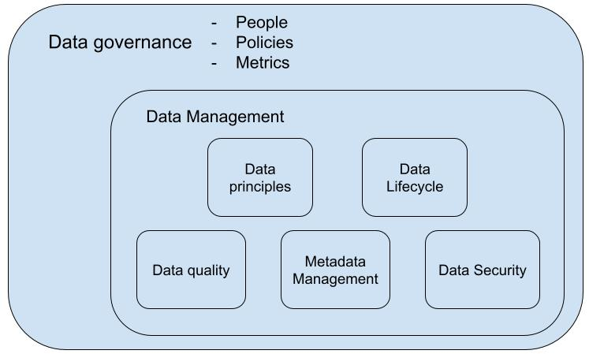
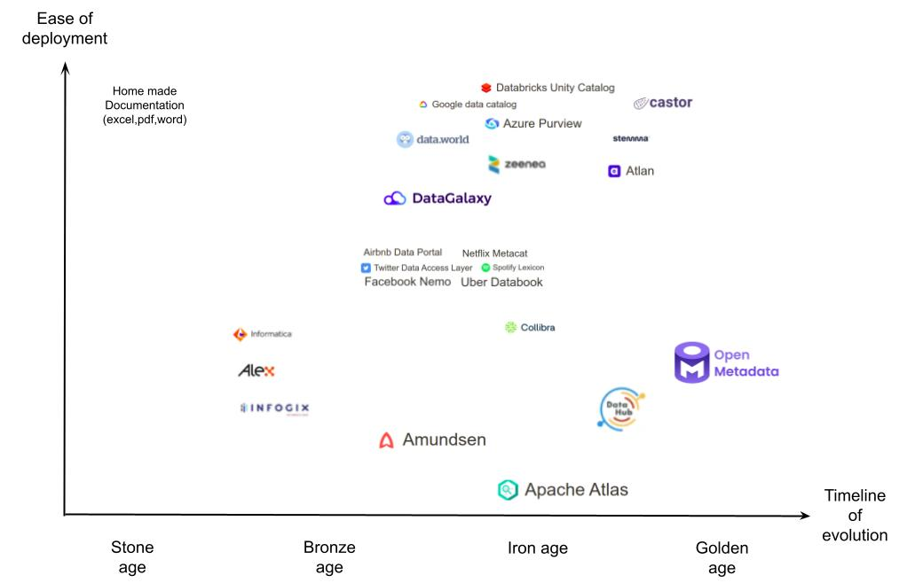
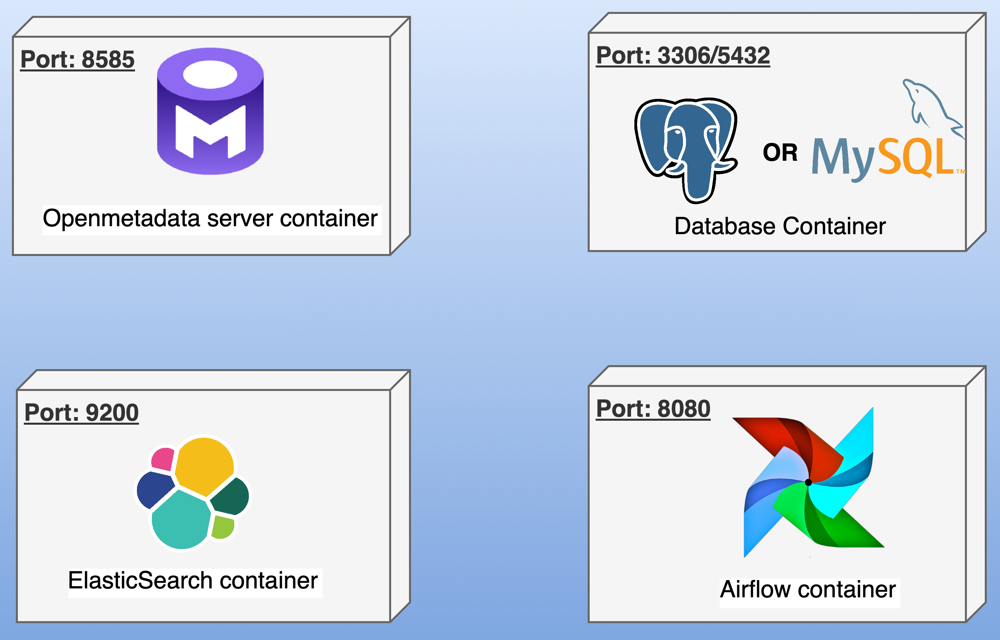

Gestion des métadonnées au CASD
Equipe Datascience
Objectifs
- Qu'est-ce que la gouvernance des données ?
- Qu'est-ce que la gestion des métadonnées ?
- Quels sont les outils populaires de gestion des métadonnées ?
- La gestion des métadonnées au CASD
Qu'est-ce que la gouvernance des données ?
La gouvernance des données est un ensemble de processus, rôles, politiques, normes et métriques qui garantissent la disponibilité, l'ergonomie, l'inter-opérabilité, la sécurité (i.e. confidentialité, intégrité, protection des données personnelles). .
Cela rend l'utilisation des données cohérente, fiable, efficace et efficiente.
Les concepts clefs de la gouvernance des données
- Personnes : qui a le droit de prendre des décisions et en est responsable
- Politiques : quelles décisions/règles doivent être mise en place pour assurer une gestion et une utilisation efficaces des données.
- Métriques : comment mesurer/évaluer si les décisions/règles sont bien respectées.
Gouvernance des données vs gestion des données
La gestion des données est un sous-ensemble à part entière de pratiques, processus, systèmes et outils qui mettent en pratique la définition de la gouvernance des données.
- Gouvernance des donnnées : définit les politiques et responsabilités (i.e. ce qui doit être fait et dans quel but.)
- Gestion des données : met en oeuvre les politiques (i.e. comment elles sont mises en pratique.)
Les concepts cles de la gestion des données :
- Principes de gestion : définissent la propriété, la responsabilité, l'éthique, la conformité, etc.
- Cycle de vie : décrit les étapes depuis la création jusqu'à la suppression des données dans une organisation.
- Qualité : mesure l'adéquation des données à l'usage prévu
Les concepts cles de la gestion des données :
- Gestion des métadonnées : facilité la recherche et l'utilisation des données en en leur attribuant un contexte
- Sécurité : protège les données contre les accès indésirables, l'altération ou la perte.
Qu'est-ce qu'une métadonnée ?
ISO/IEC 11179 : les métadonnées sont des données précisant le sens et les détails techniques d'autres données : contenu, domaine de valeurs ou autres éléments sémantiques et de représentation.
Ma définition : les métadonnées sont des informations structurées qui décrivent un ou plusieurs aspects (le format, la taille, la finalité, etc.) d'une entité de données. En général, les métadonnées sont utlisées pour résumer des informations de base à propos des données qui peuvent faciliter la recheche, la traçabilité, l'utilisation et la gestion de données.
Métadonnées descriptives : de quoi traitent les données ?
Les métadonnées descriptives détaillent le contenu et le sens des données. Elles aident l'utilisateur à découvrir et à comprendre les données.
- Schéma, valeurs distinctes, valeurs nulles, etc.
- Description de contenu (tables, colonnes).
- Mots-clefs ou tags.
- Thèmes ou catégories.
Métadonnées de contexte : pourquoi les données existent-elles ?
Les métadonnées de contexte définissent le contexte, le but et le besoin. Elles sont le lien entre les objectifs organisationnels et les contraintes de conformité.
- Règles de conformité
- Analyse d'impact
Métadonnées de traçage : d'où viennent les données ?
Les métadonnées de traçage établissent l'origine et les transformations des données. Elles permettent la traçabilité, l'analyse d'impact et le debogage.
- Source des données
- Transformations
- Destination
Métadonnées de propriété : qui est responsable des données ?
Les métadonnées de propriété attribuent les responsabilités. Elles précisent les responsables de la qualité, de la conformité, de la résolution des problèmes.
- Fournissseur des données
- Propriétaire des données
- Utilisateur des données
Métadonnées temporelles : Quand les données ont-elles été créées et mises à jour ?
Les métadonnées temporelles enregistrent la date et l'historique des versions. Elles facilitent l'audit, la conformité, et la prise de décision lié à la chronologie des données.
- Date de création
- Date de dernière mise à jour
- Version
Métadonnées administratives et techniques : Comment les données peuvent-elles être utilisées ?
Elles définissent les contraintes d'utilisation, format, méthodes d'accès pour un usage sûr, licite et efficace.
- Format : CSV
- Encodage : UTF-8
- Méthode d'accès : endpoint d'une API REST
- Politique de confidentialité : Contient des données personnnelles, le RGPD s'applique
- Politique de conservaation : conserver 7 ans
Qu'est ce que la gestion des métadonnées ?
- Conception du modèle de métadonnées : Gathering requirements, et identifier quelles métadonnées doivent être collectées.
- Création des métadonnées : collecter les métadonnées des principales entités de données.
- Conservation des métadonnées : Centraliser et standardiser les métadonnées dans un entrepôt.
Qu'est ce que la gestion des métadonnées ?
- Utilisation des métadonnées : Fournir un outil pour rechercher/découvrir, comprendre et tracer les données.
- Audit des metadonnnées : Vérifier si les métadonnées collectées sont correctes et répondent aux exigences.
Quelques outils populaires
De nombreux outils de gestion des métadonnées existent. Le CASD a testé les solutions open source.
Qu'est-ce que Open Metadata ?
Open Metadata est un outil de gestion des métadonnées open source et moderne. Il fournit :
- Un stockage unifié des métadonnées
- Un catalogue de données centralisé doté d'un puissant moteur de recherche
- Des fonctionnalités de collaboration (par exemple la création/attribution de tâches, des conversations d'équipe, etc) pour faciliter l'audit.
Architecture d'Open metadata
La plateforme Open Metadata contient : une appli web, un SGBDR, un moteur de recherche et un gestionnaire de workflows.
Types de métadonnées gérées par Open metadata
- Métadonnées descriptives : De quoi traitent les données ?
- Métadonnées de contexte : Pourquoi les données existent-elles ?
- Métadonnées de traçage : Origine des données ?
- Métadonnées de propriété : Qui est responsable ?
- Métadonnées temporelles : Quand les données ont-elles été créées et mises à jour ?
- Métadonnées administratives et techniques : Comment les données peuvent-elles être utilisées ?
Les fonctionnalités clefs d'Open metadata
- Framework d'ingestion des métadonnées : connecteurs, API rest, SDK Python
- Découverte des données : Données consultables par nom (i.e. table, colonne), description, tags, propriétaire, etc.
- Suivi de la traçabilité : Visualisation des flux de données de bout en bout.
- Collaboration : Annonces, tâches, fils d'activité, conversations d'équipe, etc.
- Gouvernance : Equipes, rôles, politiques, etc.
Les avantages d'Open metadata
- Open-source et extensible.
- Gère tous les types de métadonnées.
- Renforce la collaboration entres équipes.
- Communauté dynamique.
Les inconvénients d'Open metadata
- Complexité du déploiement et de la configuration.
- Le framework d'ingestion nécessite beaucoup de temps de développement.
- Certains besoins spécifiques peuvent nécessiter une personnalisation.
Open metadata en pratique
- Ingestion des métadonnées.
- Utilisation des métadonnées pour découvrir les données.
- Utilisation des fonctionnalités collaboratives pour améliorer les métadonnées (audit).